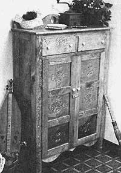
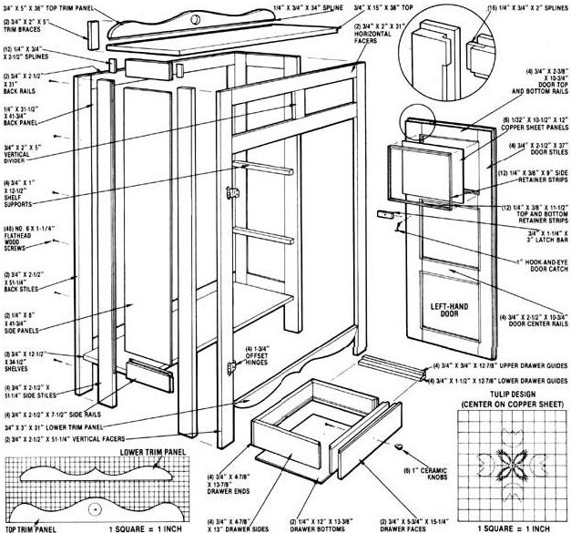

A replica can bring as much pleasure as the real thing . . . especially when you build it!
In response to the many people who've suggested that we feature more woodworking projects, here's a handsome and functional piece of furniture from America's past. It's offered to MOTHER's readers by Ed and Stevie Baldwin, owners of The Family Workshop and authors of various books and a series of syndicated newspaper columns on the subjects of woodworking and crafts.
The purchase of expensive antique furniture is sometimes difficult to justify, especially considering that many pieces were built to serve a now-defunct purpose. Yet as people continue to find new uses for old designs, their concern over cost is often diminished by their admiration for the quality of traditional workmanship.
Unfortunately, mere appreciation for things handcrafted isn't enough to assure them a place in the home . . . but if you're willing to part with a few dollars for materials and some evening or weekend time, you can fashion your own modern-day replicas that can be just as attractive as-and a whole lot less expensive than-the treasures beckoning at you from the antique-shop windows.
The old-timey pie safe I've chosen to describe here was originally used to keep freshly baked pastries and desserts out of harm's way while cooling . . . and I'm sure you can find a variety of unconventional uses to put it to besides. At 14" deep, 3' wide, and 52" high, the cabinet (with its two drawers and three shelves) can easily hold a passel of items. Its 3/4" pine framing and 1/4" plywood panels are standard lumberyard fare, and they serve to accent the punched copper face panels and porcelain knobs perfectly without the expense of hardwood.
To build yourself a pie safe as nice as any antique shop's, you'll need about 38 square feet of 3/4" white pine, 18 square feet of 1/4" plywood (I used a high-grade baltic birch), and 6 square feet of 1/32" (or 20-gauge) sheet copper, along with some hardware I'll describe later on.
Start making the side frames by cutting the four 3/4" X 2-1/2" X 51-1/4" stiles and four 3/4" X 2-1/2" X 7-1/2" rails. Then make 1/4" X 3/8" dadoes at the inner edge of each part to accept the joint splines. (The lower rails rest 5 inches above floor level.) Once that's done, cut the two 1/4" X 8" X 41-3/4" plywood side panels and assemble the structures as two complete units by gluing the frame joints while allowing the panels to float in their dado channels.
The back frame and panel assembly is put together in the same fashion (the panel and rails are simply wider than those of the side assemblies), and then the rear edge of each flank can be butted against the inner surface of the back frame and secured with ten No. 6 X 1-1/4" flathead wood screws.
The framework for the front of the cabinet consists of two 3/4" X 2-1/2" X 51-1/4" vertical facers and two 3/4" X 2" X 31" horizontal facers. A 3/4" X 2" X 5" divider separates the two crosspieces, and a decorative lower trim panel-cut from a 3/4" X 3" X 31" board-spans the uprights at a point 5 inches above floor level. As before, all the frame joints are splined and glued.
A set of three 3/4" X 12-1/2" X 34-1/2" shelves provides storage space inside the safe. Once you've dadoed and splined enough odd boards to make each shelf, you can cut the four 3/4" X 1" X 12-1/2" shelf supports and secure them to the inside of the cabinet's side stiles with glue and 3d finishing nails. The supports will need to be 11-1/2 inches apart, with the lower pair set that distance above the underneath edges of the bottom rails. Since the bottom shelf actually forms the cabinet floor, no supports are needed for it . . . the pieces can simply be glued together at the joints and the entire slab positioned flush with the lower edge of each bottom rail, before being fastened in place with No. 6 X 1-1/4" screws countersunk into the rails and extending into the shelf boards. (Plugs can be used to cover the heads.) The middle and top shelves rest on their flank supports and can be secured in the same manner . . . or simply laid in place, if you wish.
At this point, you can fasten the front framework to the pie safe (by butting it to the side stiles and using coutersunk screws and plugs as before). Then go on to assemble and install the four drawer supports. Each one consists of an upper (3/4" X 3/4" X 12-7/8") and a lower (3/4" X 1-1/2" X 12-7/8") guide, which are butted, glued, and tacked together to form an "L" shape. When complete, they can be fitted flush with the lower corners of the drawer openings and secured with countersunk screws or finishing nails inserted through the front facers and the rear stiles.
The drawers themselves are simple boxes that are assembled by using rabbet joints. Two 3/4" X 4-7/8" X 13" side pieces and two 3/4" X 4-7/8" X 13-7/8" front and back sections form each one's walls. A 1/4" X 12" X 13-3/8" plywood slab-fitted into 1/4" X 3/8" dado cuts 3/8 inch up from the lower edges of the walls-serves as the drawer bottom. A 3/4" X 53/4" X 15-1/4" face board (with a 3/8" X 3/8" rabbet at its inner edges) is fastened to the front of each assembly with No. 6 X 1-1/4" wood screws inserted from the inside. To save yourself aggravation later on, pre-fit each face board into its respective drawer opening to assure that the rabbet cuts are sufficient to prevent the drawers' fronts from binding.
Each of the pie safe's doors is actually a triple frame-and-panel assembly, with pieces of copper sheet serving as the panels (though for those on a tight budget, sections of hardware cloth can be substituted and will look nearly as nice). Those inserts are embossed with a punched country tulip design (the scaled-down template-which you'll want to re-create at full size on kraft paper-is provided in the accompanying grid diagram) . . . but you can give rein to your creative impulses if you prefer another pattern.
Start by trimming out your six copper sheets to 10-1/2" X 12" dimensions, then use your template as a guide to dimple the metal over a piece of softwood. A blunt center punch can be used to make the round indentations that form the flowers, and a slightly sharpened 1/2" cold chisel works well to create the straight flues that suggest leaves. A coat of clear varnish over the completed inserts will prevent them from tarnishing.
To make the door frames, cut four 3/4" X 21/2" X 37" stiles, four 3/4" X 2-3/8" X 10-3/4" top and bottom rails, and four 3/4" X 2-1/2" X 10-3/4" center rails. These pieces should be dadoed at their joints to accept splines . . . but not assembled until you've cut 1/4" X 3/8" rabbets into what will be the inside face of each panel opening. Once that's done, you can glue the frames together, then cut 3/8" X 3/8" rabbets into three sides of each assembled unit so that the doors, when installed, will overlap the cabinet opening at the top, bottom, and outer edges (their union at the center remains uncut and should allow a small gap to prevent binding).
With the frames assembled, go on to install the copper panels by holding them in place inside their rabbeted openings with a total of twelve 1/4" X 3/8" X 11-1/2" top and bottom strips, and an equal number of 1/4" X 3/8" X 9" side strips tacked to the panel openings. Finish up by hanging the doors on the face of the cabinet, using four 1-3/4" semi-concealed offset brass hinges and No. 6 X 3/4" roundhead wood screws, and then installing a small inside brass door catch between the upper shelf and one door. A 3/4" X 1-1/4" X 3" wooden latch bar (dressed with rounded edges) fastened to the face of that door with a No. 6 X 1-1/4" roundhead brass screw can be rotated to keep the other door secured. You can also mount 1" ceramic knobs to the door and drawer faces, as shown in the photo.
To complete the cabinet, install the top and its rear trim piece. Like the shelves, the pie safe's upper surface is constructed of 3/4" boards spline-jointed together, forming a 15" X 38" platform. The trim-cut from a 3/4" X 5" X 36" piece to a contoured shape with a center hole-fastens flush to the rear edge of the top with a vertical spline joint and two 3/4" X 2" X 5" braces attached between it and the back's top rail with No. 6 X 1-1/4" screws. Before mounting the top boards to the cabinet, you may wish to round their outer edges . . . then you can secure the top sections to the walls with countersunk flathead wood screws hidden with plugs. The rear edge of the completed top should be flush with the back of the cabinet, but there'll be a slight overhang at the front and sides.
The final finish is, of course, the joiner's choice. After a light sanding, the pine will take several coats of boiled linseed or tung oil nicely. To find a darker hue for your pie safe's finish, experiment with a variety of stains on some scraps of wood. But whether you choose a light or a dark finish, you're sure to enjoy the fruits of your labor for years to come . . . all for a moderate investment and some pleasurable shop hours of woodcrafting.
EDITOR'S NOTE: A more detailed set of pie safe plans-with illustrations and specific instructions-is available for $3.95 from The Family Workshop, Dept. TMEN, P. O. Box 159, Bixby, Oklahoma 74008 (specify Project No. 549-2). Also, a color catalog featuring hundreds of additional woodworking and needlecraft projects can be purchased for $2.95 from the same address.
|
 |
 |
|